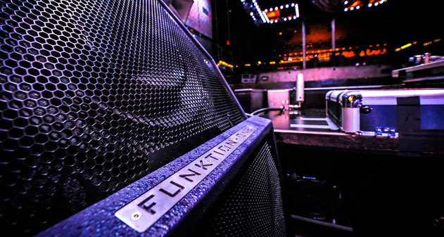
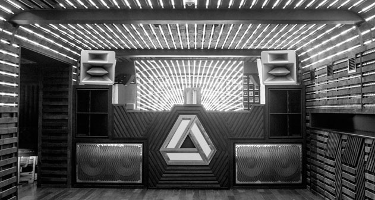

Funktion One celebra 30 años de existencia, el sistema de audio que vino a revolucionar la fidelidad y la experiencia sonora de las fiestas de música electrónica principalmente alrededor del mundo y también en algunos importantes festivales como el Glastonbury.
Funktion One nace en 1992 gracias la visión de Tony Andrews y John Newsham, quienes desde entonces cuentan con un CV de diseñadores y fabricantes de gran prestigio en cuestión de sistemas de altavoces (monitores) de alta calidad, con numerosas patentes a su nombre.
Y aunque para muchos los nombres de Tony Andrews y John Newsham empezaron a resonar hasta los 90s, su carrera y alianza se remonta hasta en la década de los 70s con la fundación de Turbosound, y desde entonces, se ganaron automáticamente la etiqueta de pioneros en el desarrollo de la industria del audio.

En los últimos 20 años, sus diseños se han encargado de musicalizar las mejores fiestas, eventos y festivales principalmente en Europa, y han llegado a una nueva generación de productores, promotores y público en general, gracias a festivales como el Dekmantel o lugares icónicos como el Fabric en Londres, además de que siempre los podemos ver en cada sesión del Boiler Room en su mayoría de locaciones.
Su legado se debe a la alta eficiencia electroacústica que emanan de sus altavoces, diseñados para cada lugar en específico, siempre con una tecnología avanzada y con un alto impacto dinámico den todas sus funciones y algo realmente destacables que les hace estar muy por encima a otros sistemas de audio es que principalmente basan sus resultados mediante pruebas auditivas integrales, validadas mediante electroacústicas en profundidad con instrumentación y software estándar de la industria y sobre todo personalizados, ¿recuerdan por qué Krafwerk suena único y aunque su sonido ha sido mil veces imitado jamás ha sido igualado? Básicamente pasa lo mismo con Funktion One, al igual que Kraftwerk diseño sus propios instrumentos, ellos hacen lo mismo con sus herramientas.
El legado, impacto y desarrollo que ha dejado Funktion One es que entienden el sonido como el más importante de los sentidos humanos, y han llevado eso a un nuevo plano, a otra dimensión, una dimensión que hasta el día de hoy podemos decir con todas sus letras que ha sido: revolucionario. La experiencia Funktion One para todos los que alguna vez han disfrutado de ella, saben que es inolvidable.
Si alguien de nuestros lectores está interesado en este sistema de audio, les recordamos que para su compra, renta e instalación de Funktion One pueden acercarse durante los dias habiles que nos encontraremos abiertos para recibir cualquier tipo de propuesta de negocios y asesoramiento para este tipo de casos. Aqui en UnderClub apoyamos la escena mundial y sobre todo local y brindando un sin fin de posibilidades para adquirir las herramientas necesarias para crecer como artista.